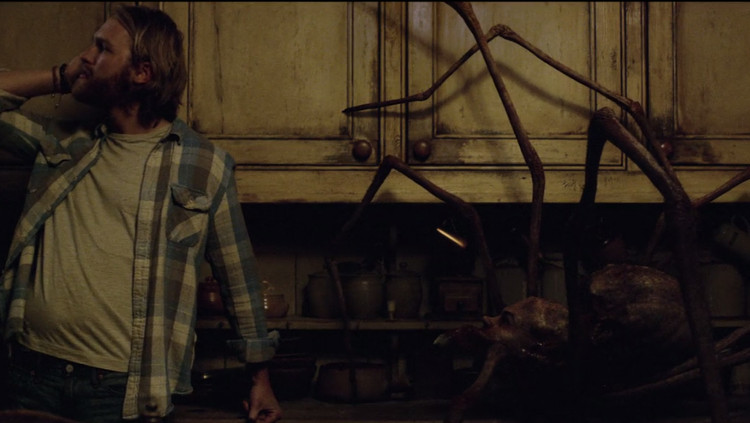

1)Should we have an opinion, a belief or knowledge about limits of technology? Why?
2) Do you think that technology improves or inhibits our knowledge tools and skills? Why?
We must know the limits of technology or rather know the limits of how technology is able to improve to such an extent that we do not become obsolete; So knowing the limits of technology helps us to know to what extent certain ideas and developments benefit us.
We think that technology is one of the greatest tools to improve our knowledge; Of course if this technology is used well, because if we use it wrong it can delay human progress and it could become insensitive and also little moral for the human beings making us lose all our rationing.
|  |
This symbol was made by us, and this represents how the technology is used in this episode for testing a man´s mind, and how the technology is a disadavantage for the humans because it started to play with the man´s feelings, he started to feel angry, sad and scared because of this test. And also we put some guys with glasses to represent that the human can use this kind of technology to manipulate any person in the world, so this could be dangerous for us.
Widget is loading comments...
|